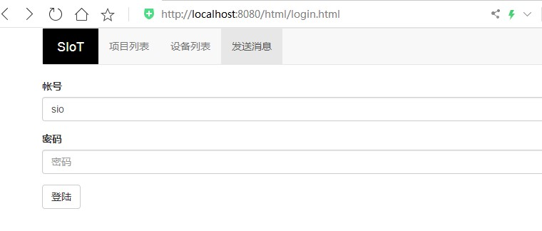

3. MQTT信息的发送和订阅（mPythonX）¶
基于mPythonX，我们可利用掌控板、MQTT服务器实现消息的发送和订阅。
3.1. 准备工作¶
（一）硬件准备
掌控板及其连接线

（二）软件准备
1.搭建SIoT服务器
直接双击点击与系统匹配的SIoT运行文件，屏幕会弹出一个黑色的CMD窗口，在配置中请不要关闭它。

2.登录SIoT平台
打开浏览器，输入url：http://localhost:8080 （超链接）
3.打开mPythonX 0.3.2编写程序

3.2. 步骤¶
（一）参考程序

注：为确保数据持续成功发送，注意定时器发送消息的用法。
（二）具体操作
1.打开mPythonX 0.3.2，连接串口。

2.手动修改可连接的WiFi名称与密码。

3.设置MQTT初始化参数。服务器地址为本地IP地址，Client_ID为项目ID，Iot_id和Iot_pwd即SIoT使用的账号密码。

4.手动修改主题为“项目ID/名称”。

5.将程序“刷入运行”进行测试，界面右下角显示当前程序的运行进程。

（三）运行结果
1.信息的发送
（1）掌控版屏幕显示当前光线值

（2）SIoT平台设备成功接收光线值

2.信息的订阅
在SIoT平台给掌控板发送消息“on”，掌控板最左侧灯变成红色。相同操作，发送消息“off”，灯灭。